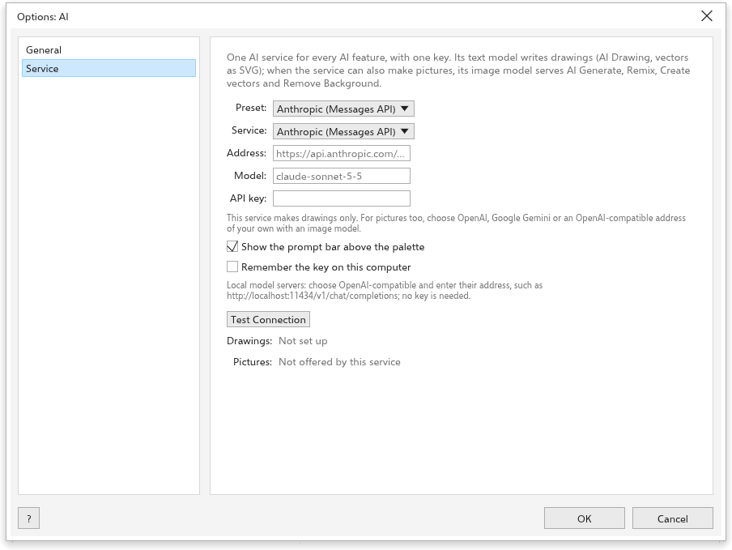

AI 绘图和生成
TraceDraw 可以根据文字描述进行绘图，并使用你选择且用自己的密钥设置好的 AI 服务生成图片。TraceDraw 自身没有 AI，也没有账户：在你运行 AI 命令之前不会发送任何内容，运行时也只将该命令所需的内容发送到你设置的服务。每个请求由你的服务计费；在你的计算机上运行的本地模型服务器则不产生费用。
设置 AI 服务
工具 > 选项 > AI 有两个页面。

在 服务 页面上，为所有 AI 功能设置一个 AI 服务：
- 选择一个 预设：Anthropic、OpenAI、Google Gemini，或你计算机上的模型服务器（Ollama、LM Studio、llama.cpp server、vLLM）。预设会填入服务类型和地址；自定义 接受任何与 OpenAI 聊天补全接口兼容的地址。
- 输入你在该服务的账户的 API 密钥（本地服务器不需要）。勾选 在此计算机上记住密钥 可保留它；它随后以纯文本形式存储在你的首选项中。
- 选择 模型，对于能生成图片的服务（OpenAI、Google Gemini 或带有图像模型的自定义地址），还要选择 图像模型。
- 单击 Test Connection。它向服务查询其模型并显示模型数量，或显示服务的错误。
显示提示栏 将 AI 提示栏放在调色板上方。
常规

- Turn on AI features（打开）：关闭后，所有 AI 命令都显示为灰色。
- Services：Drawings 和 Pictures 是 Ready 还是 Not set up。
- Features：每个 AI 命令的作用。
- What is sent：只在你运行命令时，将该命令所需的内容发送到你设置的服务。
用文字绘图
在提示栏中，或在 AI Generate 面板（对象 > AI Generate > Draw with Words）的 用文字绘图 模式中，输入诸如“一辆蓝色车轮的红色自行车”或“把圆放大，并把标题放在它下面”之类的请求，然后按 绘制 或 Enter。服务为绘图编写一个脚本，TraceDraw 将其作为一个撤消步骤运行。对话会被保留，因此你可以要求修改；新对话 重新开始。在脚本中打开 显示该脚本。
AI 生成面板
AI Generate 面板（工具 > AI Generate，或标准工具栏上的 AI 生成按钮）使用你的服务的图像模型生成图片。

用顶部的按钮选择模式：
- 创建图像：根据描述生成图片。给我灵感 填入一个创意。选择纵横比。
- 混编图像：按你的描述修改图片（起初为所选位图）。现成的请求包括样机、修复照片、为草图着色、替换背景、更换季节和重新着色。
- 创建矢量：将插图变为可编辑的形状，可以是描摹成曲线的图片，也可以是由文本模型编写的 SVG 绘图。
- 用文字绘图（见上文）。
每种模式都有 模型、可选的参考图片（使用所选内容 或 导入文件）、提示，以及 样式 和 调色板 图块。在底部设置 图像 数量（1 到 4）和 插入绘图，然后单击 生成。结果保留在面板中；单击其中一个即可插入。
其他 AI 命令
- 位图 > 用 AI 删除背景 保留图片的主体，使其余部分变为透明。
- AI Art Styles 以八种风格之一重新绘制所选内容。
在 AI 关闭或未设置时，这些命令显示为灰色，其提示说明原因；Set Up AI 按钮打开相应的选项页面。